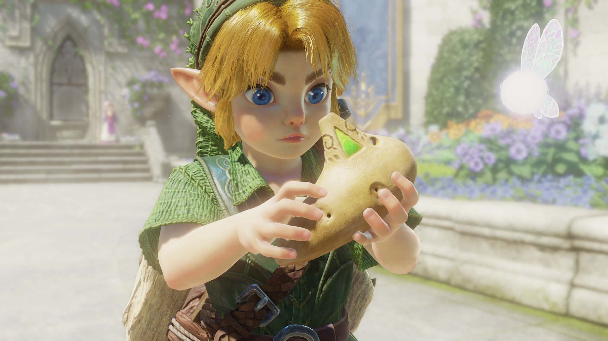

Zelda Ocarina Of Time Remake

Contexto
The Legend of Zelda: Ocarina of Time é um clássico lançado originalmente em 1998 e um dos jogos mais importantes da série Zelda. Para celebrar os 40 anos da franquia, a Nintendo anunciou uma nova versão para o Nintendo Switch 2, com visuais reformulados, dublagem, trilha sonora orquestral, novos controles e melhorias na experiência. A aventura acompanha Link em sua jornada por Hyrule, enfrentando inimigos, explorando templos e buscando impedir uma ameaça. A nova versão mantém a essência do clássico, mas apresenta gráficos e recursos atualizados para uma nova geração de jogadores.